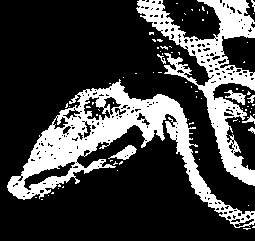

P. regius
ball python
lucky numbers: 18, 28, 22 ✧
lucky numbers: 18, 28, 22 ✧
lucky numbers: 18, 28, 22 ✧
a brown snake drawn to less wooded areas. known and named for its tendency to curl into itself when in danger. females can grow up to six feet in length. extremely popular as pets, where it is bred extensively for various patterns or “morphs.” feeds on small mam-mals and birds. terrified of insects. hates change and the un-familiar. places a lot of importance on a good first impression. makes fast and scathing judgements. tends to gossip about sheep behind their backs. becomes fast friends with tigers. not compatible with owls, but can form an alliance if needed.